| Document | Current state and features |
|---|---|
| Date | 6 October 2026 |
| Repository | github.com/Yoga56/ZDEMO_SAC_FIORI, branch main |
| Package | ZSAC_FIORI (ABAP), apps zsac.lib and zsac.fiori (UI5 1.136) |
| Status | Running on the sample data (mock provider) and on a real S/4HANA Cloud system (OData V4), see chapter 8 |
Screenshots in this document come from the sample data (mock provider) running locally, unless a caption says otherwise.
The application brings the working model of SAP Analytics Cloud (SAC) to a Fiori environment on SAP S/4HANA Cloud: stories (dashboards), the data analyser, models (datasets), planning with versions, data actions and multi actions, a calendar, and a file catalogue. Everything a user builds, models, stories, data actions, multi actions and files, is data stored in the backend and edited in the app, so new content needs no code change.
Two design aims run through the whole code base: modular and reusable (the UI5 library zsac.lib can be used by any other Fiori app, widgets and data providers are
plug-ins) and usable without a backend (a mock provider with sample data), so every feature can be tried and tested locally.
| Area | Content |
|---|---|
| Home, Files | Landing page with metrics and recent items, file catalogue with folders, favourites, sharing flags, search |
| Stories | Designer and viewer: pages, grid canvas, widgets (charts, KPI, table, input control, text, planning table, triggers, variance explainer), story filters |
| Data Analyser | Free analysis of a model: rows, columns, filters, chart or table |
| Datasets, Modeller | SAC style modeller: measures, dimensions (types, attributes, hierarchies, Date hierarchy), preferences, related objects, CSV import and export, CDS source |
| Planning | Editable planning table with hierarchies, spreading, copy and paste, formulas, distribute values, unpublished buffer with undo and redo, publish, versions, version history, comments on cells |
| Data Actions | List, designer with step flow, parameters, 5 step types, validation, trace (dry run), run history |
| Multi Actions | Designer, parameters mapped onto data actions, 9 step types, validation, run dialog |
| CDS data sources | A model reads a CDS view live, or imports its rows into versions |
| Variance explainer | Why did a measure change between two versions or sets of months, by every dimension |
| Calendar | Planning tasks with assignee, due date and status |
Out of this release: Predictive Scenarios, Compass, Just Ask, scripting (Analytics Designer), server side aggregation of the sample data, a real connection to PaPM.
Browser (UI5 1.136)
+--------------------------------------------------------------+
| zsac.fiori shell, routes and pages (Home, Files, Stories, |
| Analyser, Datasets, Modeller, Planning, Data |
| Actions, Multi Actions, Calendar) |
| zsac.lib core engines, widgets, designer, planning, |
| providers (Mock, ODataV4), LiveSource |
+------------------------------+-------------------------------+
| DataProvider contract
+--------------------+---------------------+
| |
MockProvider ODataV4Provider
(sample data, browser storage) OData V4 to ZUI_SAC_O4
(RAP on S/4HANA Cloud)
LiveSource: OData V4 to any CDS view service (read live or import)| Layer | Contents |
|---|---|
| core | DataProvider (contract), ProviderRegistry, QueryEngine (aggregation, exception aggregation, hierarchies, Date hierarchy), HierarchyEngine, ModelSchema, FilterEngine, StorySchema, WidgetRegistry, VarianceEngine, Format |
| provider | MockProvider, ODataV4Provider, LiveSource (CDS), FakeODataService (stand-in used by the sample and the tests) |
| planning | PlanBuffer, PlanEditor, Spreader, Distributor, FormulaEngine, PlanGrid, PlanToolbar, PlanPublisher, VersionEngine/Manager/History, DataActionSchema/Engine/Run, MultiActionSchema, StepRunners, ImportEngine, Forecaster, comments |
| widget | SvgChart, KpiTile, PivotTable, WidgetCard, chart builders, the widget registrations (chart.*, kpi, table, filter, text, planning.table, dataaction.trigger, multiaction.trigger, variance) |
| designer | StoryCanvas, StoryViewer, BuilderPanel, FilterEditor |
| app (zsac.fiori) | Component (chooses the provider), pages and controllers, Modeller helpers (master data dialog, CDS source dialog, CSV tools) |
DataProvider. Providers return raw facts; aggregation is the shared QueryEngine, so mock and backend behave identically.Home shows key metrics, recently changed objects and open tasks. Files lists all objects with folders, favourites, a search, and filters for stories, datasets and actions. Objects are opened, duplicated, moved or deleted from here.
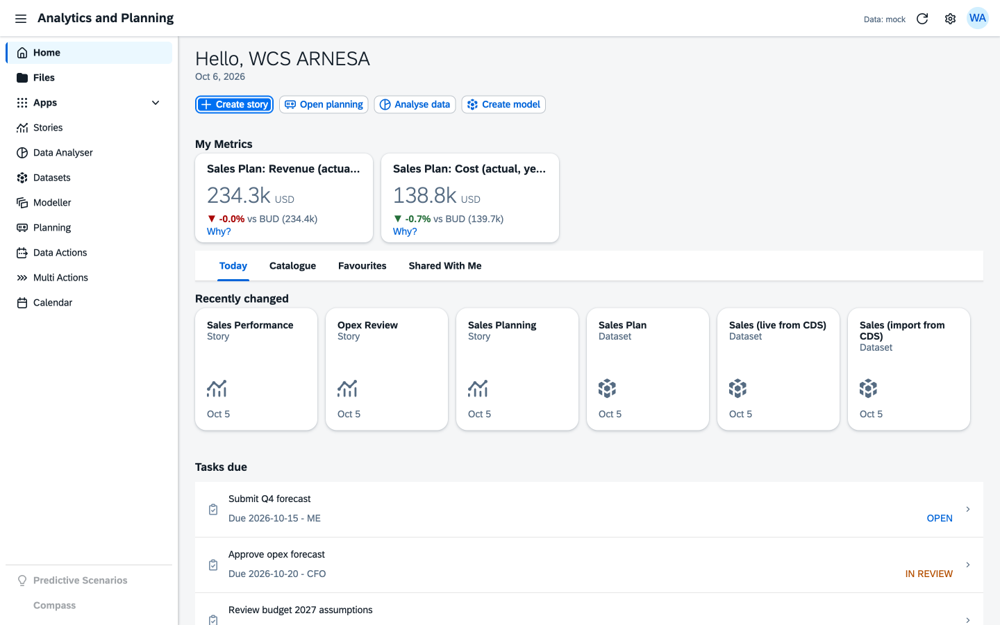
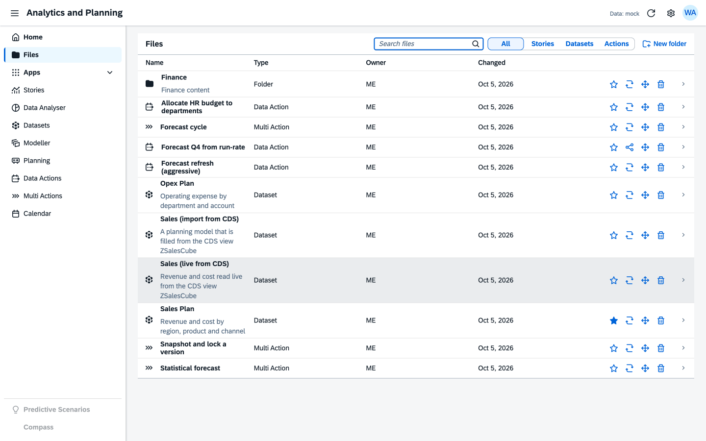
A story is a set of pages on a grid. Widgets come from a registry; each has a builder panel (model, measure, dimensions, filters, options). Story filters (input controls) apply to all widgets; a widget can override them. Stories can be viewed, edited, duplicated and published.
| Widget | Purpose |
|---|---|
| chart.bar, line, donut, funnel, sankey, gauge | SVG charts with legends, hierarchy levels and hover values |
| kpi | Value with a comparison against a version, coloured by whether higher or lower is better; a Why? link opens the variance explainer |
| table | Cross-tab with hierarchies, totals, measure format (scale, decimals) |
| filter | Input control for a dimension |
| text | Explanatory text |
| planning.table | Editable planning table (chapter 4) |
| dataaction.trigger, multiaction.trigger | Buttons that run an action and ask for its parameters |
| variance | Headline and top contributors for the difference between two versions, with a link into the explorer |
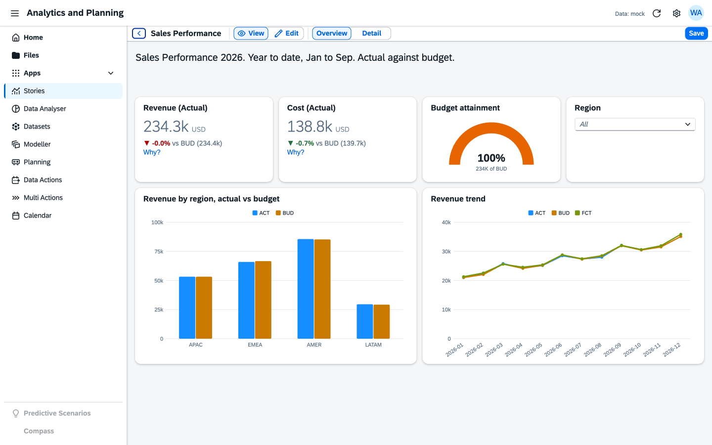
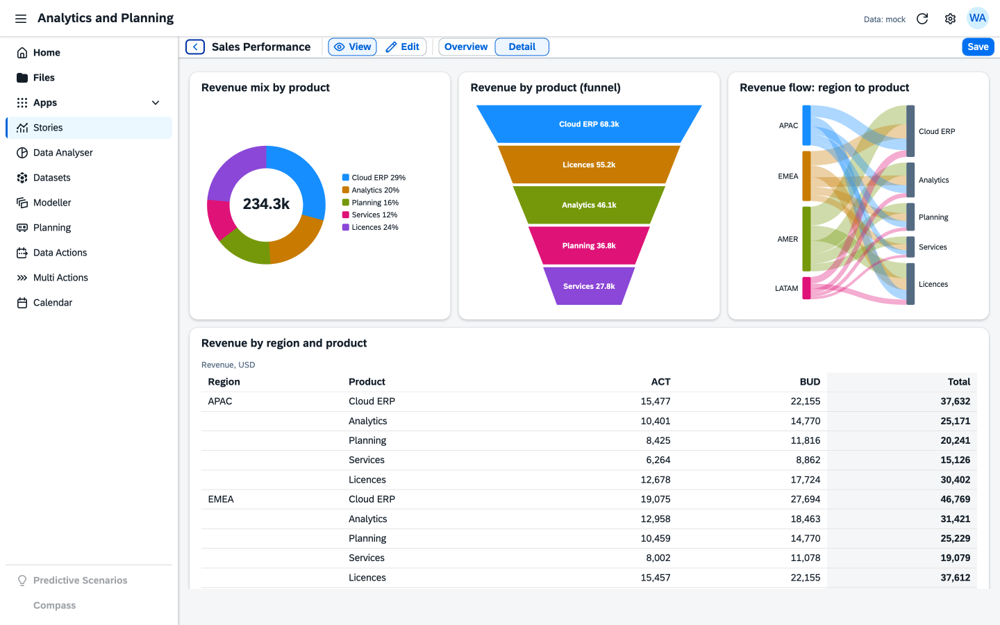
Pick a model, put dimensions on rows and columns, filter, and switch between table and chart. The same query engine as the stories is used, including hierarchies and the Date hierarchy (year, quarter, month).
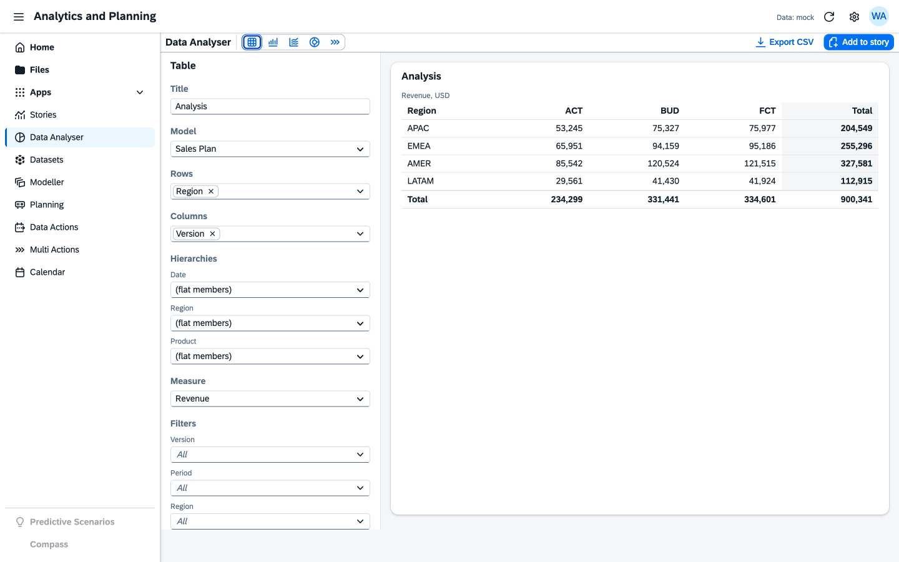
Datasets lists the models with their data. The Modeller follows the SAC layout: model structure on the left (measures, dimensions), details on the right.
| Topic | What is possible |
|---|---|
| Measures | Aggregation (sum, average, minimum, maximum, count), exception aggregation by dimensions, data type, unit type, scale, decimals |
| Dimensions | Types (Generic, Organization, Account) with preset attributes, members with attributes and texts, one or more hierarchies per dimension, built-in Version, Date (with year > quarter > month) and Measure |
| Preferences | Planning capabilities, data locking, data audit |
| Data management | Preview, CSV import and export of facts, summary per version |
| Related objects | Stories, data actions, multi actions and tasks that use the model |
| CDS source | Live or import connection to a CDS view (chapter 6) |
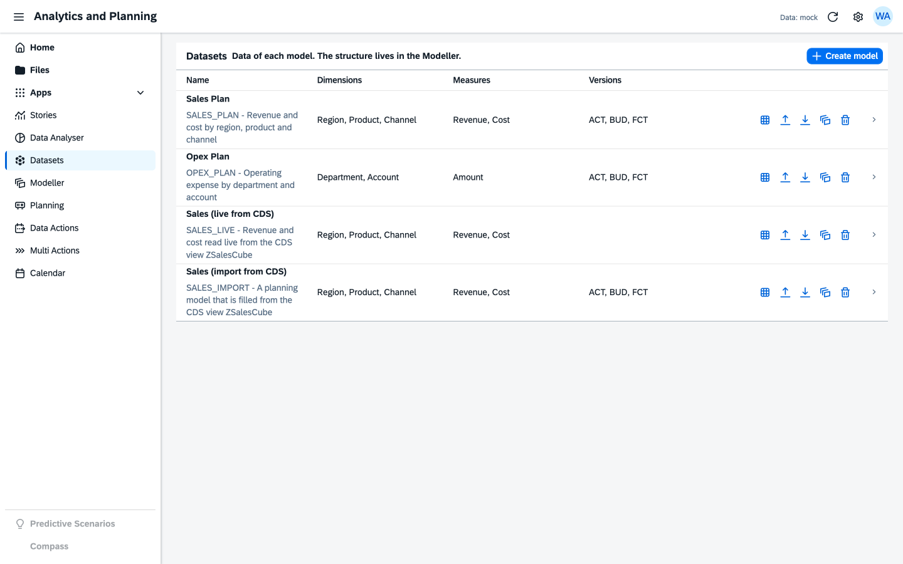
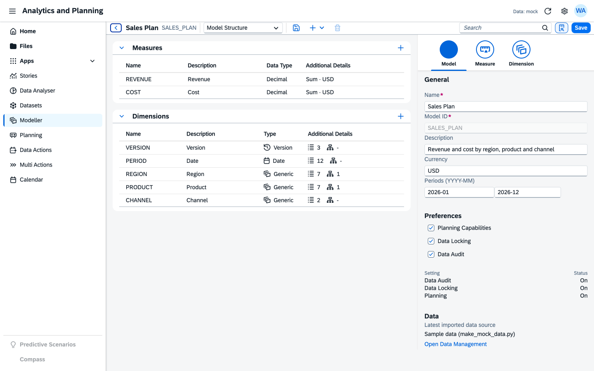
The planning table (planning.table) is an editable cross-tab. Edits go to an unpublished buffer, are shown immediately in every widget of the page, and reach the backend only on Publish Data.
| Feature | Behaviour |
|---|---|
| Editing | Type into a cell. A leaf cell writes that fact; a parent node, quarter or year spreads the value over the facts below it (proportional for sums, equal parts when the sum is zero) |
| Selection | Click, drag, or click a header to select a row, a column or the table; leaf cells only when an axis holds several levels |
| Copy and paste | Ctrl+C and Ctrl+V with the clipboard, plus toolbar buttons as fallback; paste spreads a block starting at the selected cell |
| Formula bar (fx) | Enter a number or an expression for the selected cells: 1200, *1.1, +500, -10%, =ACT*1.05; no eval, a small parser |
| Distribute values | Dialog to spread a total over the selection equally, by a reference version or proportionally |
| Undo and redo | Labelled steps; Version History lists the steps and undoes up to a step |
| Publish and discard | Publishes the buffer model by model; a locked version cannot be written; version work asks to publish first |
| Versions | Version Management dialog: public and private versions, create private copy, publish, revert, lock, unlock, delete |
| Version History | Unpublished steps of the session and, where the data source has one, the published change log (Data Audit) |
| Comments | Select one cell and press the comment button: list, add and delete comments; commented cells show a corner marker and the text as a tooltip |
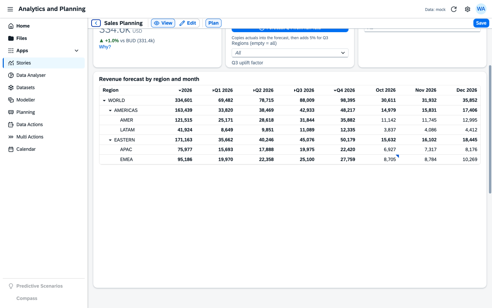
A data action is a flow of steps on one model, edited in a designer: the step flow on the left, the editor of the selected object on the right. The designer supports adding, duplicating, moving and deleting steps, undo and redo, Validate, Trace, Run and Save.
| Concept | Detail |
|---|---|
| Parameters | Member parameters (a dimension, one or several members, defaults) and number parameters. In steps they are written @Name; the run dialog and the trigger widget ask for them. The list shows where each is used |
| Copy | Rules per dimension (from, to; dates shift by whole years or quarters), aggregate-to, overwrite or append, copy factor |
| Allocation | Spread over target members equally, in proportion to existing values, or like a reference version; clear the source |
| Scale | Multiply the selected values by a factor |
| Fact Deletion | Delete the filtered facts (warning without a filter) |
| Embedded Data Action | Run another action of the same model with its own parameter values; loops are rejected |
| Validate | Errors and warnings per step: names, parameters, unknown dimensions or versions, locked targets, missing allocation fields, unused parameters; errors block Save |
| Trace | Dry run: per step created, updated and deleted counts and sample old and new values; nothing is written |
| Run history | Job Monitor: status, changed, duration, user, parameters, steps |
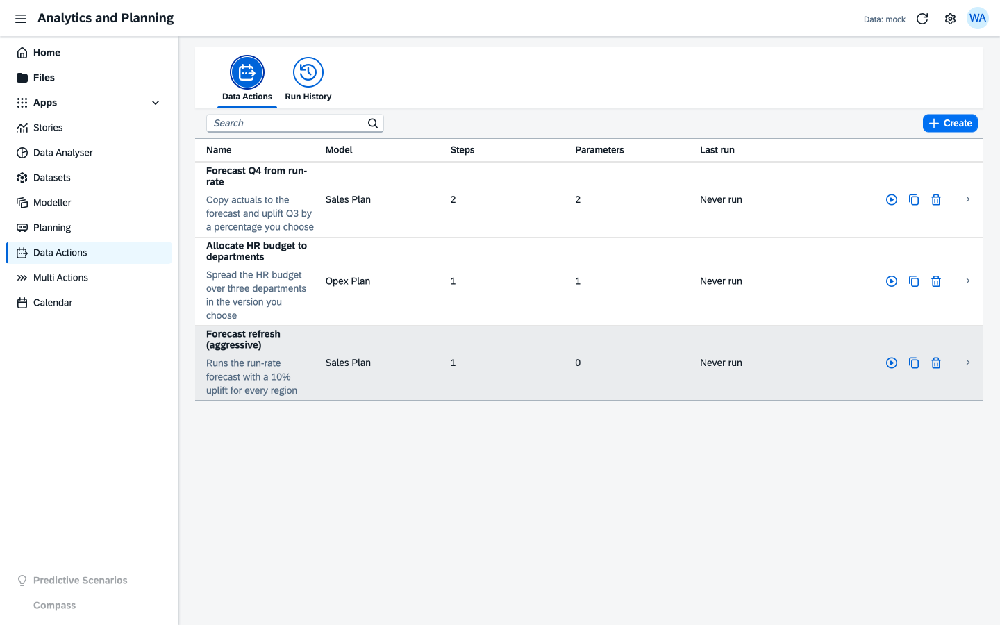
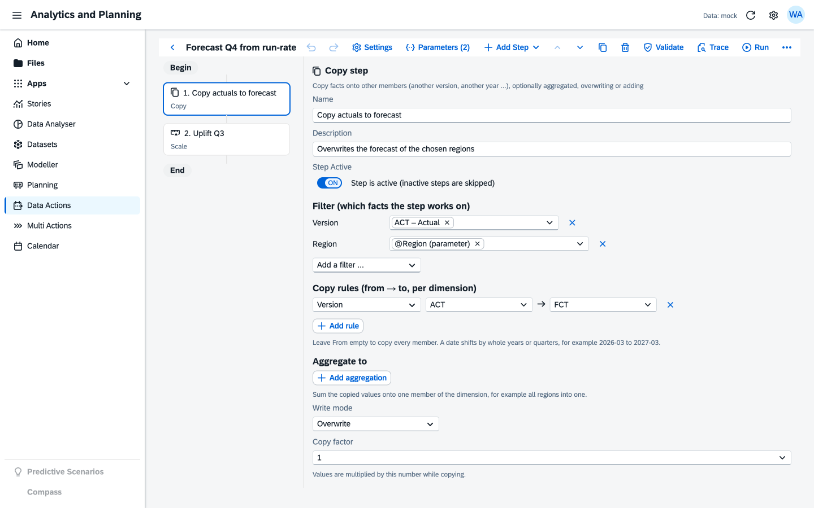
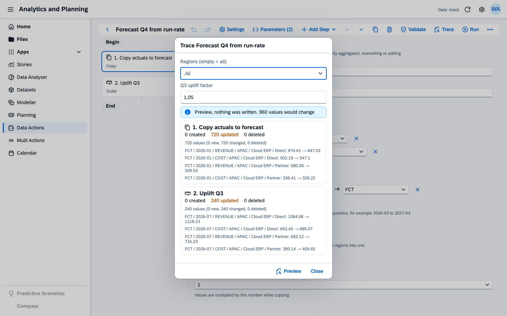
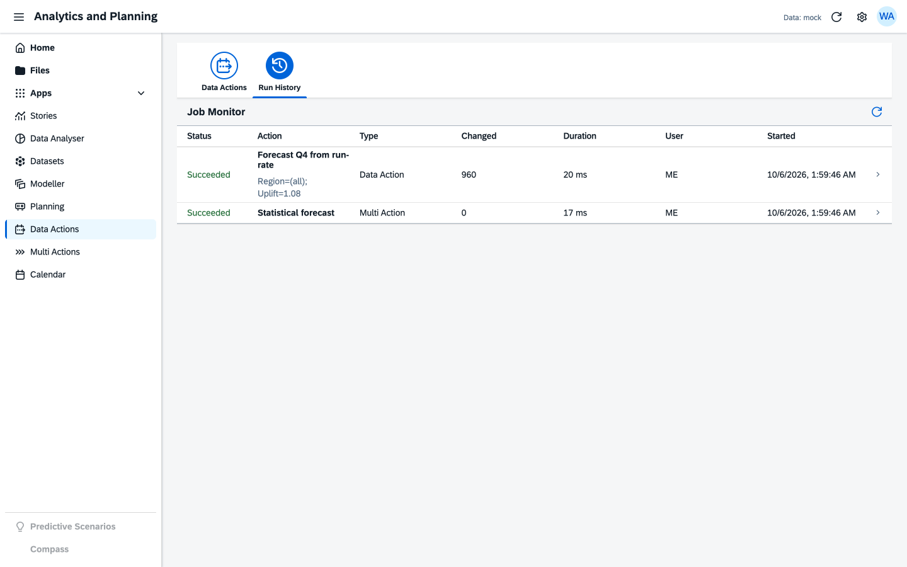
A multi action runs steps in order; the first failing step stops the run and what earlier steps wrote stays written. Parameters of the multi action are asked for once and mapped onto the parameters of each data action step, onto fixed values, or left at the default of the data action.
| Step type | What it does |
|---|---|
| Data Action | Run a data action with mapped parameters |
| Publish Version | Publish a version over another (ids or parameters) |
| Version Management | Create a private version, revert a private version, delete an unlocked version |
| Data Locking | Lock or unlock a version |
| Data Import | Load a CSV (pasted or from a file) into a version with a column mapping, long or wide format, checked row by row, stop or skip on errors, replace or add |
| Predictive | Statistical forecast per member combination: linear trend, moving average, exponential smoothing, same month last year; reports a back-test error |
| API | HTTP call with parameters in the URL, headers and body, expected status, timeout; no cookies are sent |
| PaPM Integration | Calls a PaPM function through a provider hook; the sample data source only simulates it |
| Comment Management | Copy the comments of a version to another version, or delete them |
| Import from Source | Copy rows of the CDS view behind an import model into a version for chosen months |
Steps have a name, a description and an active switch. Validate checks existence, types, versions and locks and marks problem steps in the flow.
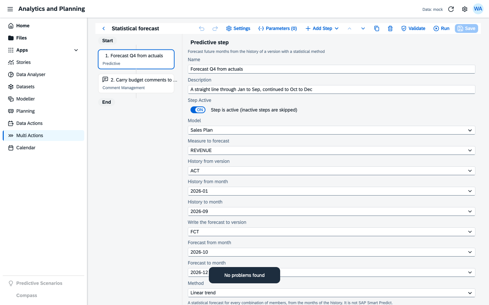
A model can be connected to a CDS view, standard or custom, exposed as an OData V4 service. The same mapping serves two modes.
| Live | Import | |
|---|---|---|
| Where the data is | In the CDS view, read when a story, table or analysis asks | Copied into versions of a planning model |
| Planning, versions, actions | No: read only, one locked version | Yes, on the copy |
| Currency of the data | Always current | As of the last import |
| Access control | CDS access control of the user who looks | CDS access control of the user who imports |
/sap/opu/odata4/sap/zui_sac_gl/srvd_a2x/sap/zui_sac_gl/0001/) and entity set; the dialog reads $metadata and lists the fields.202603, 2026-03 or a date (summed by month).Live reads become $apply=filter(…)/groupby((period, dimensions, currency),aggregate(field with sum as ZSAC_measure)), so the service aggregates and only the result travels.
If the service cannot aggregate it answers 501, 405 or a 400 that says so; the app then reads the rows as they are and aggregates them itself (up to MaxRows, 100 000 by default).
Errors of the service are shown with their details and, for the currency case, a hint on what to set.
Wrap the standard or custom view in your own aggregating view entity (renaming fields, building the period, grouping), add a service definition and an OData V4 service binding, publish it. On ABAP Cloud only released views may be used. Details and an example for I_JournalEntryItem: sap/docs/cds-sources.md.
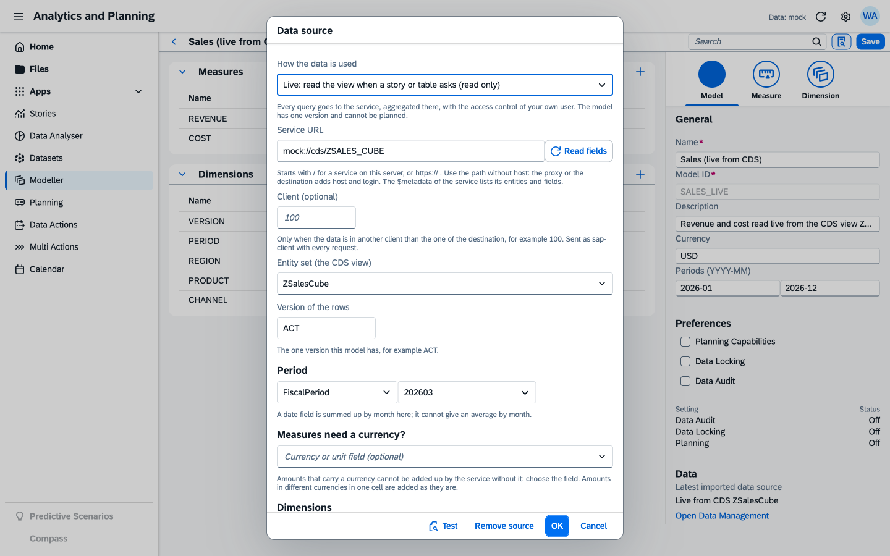
ZI_SAC_GL_PERIOD (service ZUI_SAC_GL, 1 092 rows, four company codes, two currencies, 182 accounts)
was connected as a live model GL_LIVE and as an import model GL_PLAN. Findings from that test (alias clash, currency in the grouping) are fixed.Explains the difference of a measure between two versions or two sets of months, by the members of every dimension. It opens from the Why? link of a KPI tile with a comparison, or from the variance widget.
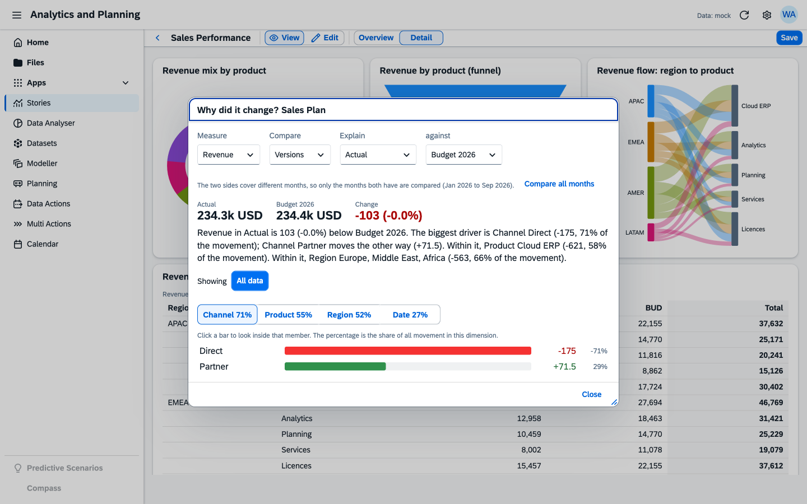
A comment belongs to the coordinates of a cell (version, period, measure, member of each fixed dimension). The comment button of the planning toolbar opens the list, new comments get the user and time. Comment Management steps copy or delete the comments of a version. Stored in ZSAC_COMMENT (entity CellComment); the sample provider keeps them in browser storage.
Sources are generated from one description (sap/tools/sac_spec.py) by gen_rap.py and abapgit_meta.py into the abapGit folder sap/src; handlers and engines are written by hand.
| Object | Contents |
|---|---|
| Tables | ZSAC_FILE, STORY, WIDGET, MODEL, DIM, MEASURE, VERSION, FACT, DATAACT, DASTEP, MULTIACT, MASTEP, RUN, COMMENT, CALTASK |
| Business objects | ZR_SAC_* managed (no draft, strict(2)), compositions Story-Widget, Model-Dimension/Measure, DataAction-Step, MultiAction-Step; ZC_SAC_* projections; external numbering, keys mandatory on create |
| Actions | Version: CreatePrivate (static), Publish, Revert. Fact: WriteFacts, DeleteFacts (bulk) |
| Classes | ZCL_SAC_FACT_WRITER, ZCL_SAC_VERSION_ENGINE, ZCL_SAC_SEED (sample data), behavior pools ZBP_R_SAC_* |
| Service | ZUI_SAC_O4 (OData V4 UI) with the binding created in ADT; UI5 app deployed as ZSAC_FIORI, launchpad descriptor in zsac_fiori_ui5r.uiad.json (ignored by abapGit) |
| Rules | Locked versions cannot be written; publish needs an unlocked target; the model structure is checked on save (a model with its dimensions in one request) |
ChildChangedAt.cd sap/app/sacfiori npm install npm run start-mock # sample data, nothing else needed npm test # in sap/app/saclib: unit tests of the engines and providers
ZCL_SAC_SEED (F9) in the client you use.ZUI_SAC_O4 (OData V4 - UI) on the service definition and publish it. The service path is in manifest.json.npm install and one of the start scripts below; open index.html?provider=odata.| Script | Backend destination |
|---|---|
| npm start | my402244 (ui5.yaml) |
| npm run start-402225 | S4_402225_DEV (ui5-402225.yaml) |
| npm run start-local, start-mock | None (local proxy or sample data) |
| npm run deploy, deploy-402225 | Deploys the app to the ABAP system of the destination (ui5-deploy*.yaml) |
Use a relative service URL so the proxy and the destination add host and login. The app and the CDS data can live on different destinations only for testing (second backend entry in ui5.yaml); a deployed app reads the system it is deployed on.
The provider is chosen by the URL parameter ?provider=odata or mock, else by sap.ui5/config/provider of the manifest (mock). The header shows the active provider.
77 unit tests run with node --test (engines, providers, schemas, planning, CDS source, variance, steps); all pass at the time of writing.
All pages and dialogs shown in this document were exercised in the browser on the sample data.
| Feature | Result |
|---|---|
| Backend reads: models, versions, stories, actions, files, runs | works |
| Live CDS model on the G/L view: query, story with 2 pages, filters | works |
| Save a model with dimensions and measure (deep insert), versions, Files entry | works |
| Import from the CDS view, 1 092 values | works (11 s) |
| Lock and unlock a version (PATCH), data kept | works |
| Data action with parameters, dry run and run (329 facts) | works, result checked |
| Multi action steps: Data Action, Data Locking, Predictive, Comment Management, Import from Source, Data Import | works (8 steps in 85 s) |
| Multi action steps: API (401 from the target, reported), PaPM (not connected, reported) | as designed |
| Cell comments: save, list, copy, delete | works |
| Planning edit in the buffer and publish | works |
| Variance explainer on versions of the imported model | works after a fix |
| Create private version (server action) | fails until two ABAP lines are changed by hand, see chapter 11 |
| Publish, revert and delete of a private version | not tested (needs the fix above) |
Not tested on the real system: typing into the planning grid in the browser, trigger widgets, file upload, the Calendar.
my402225 has no abapGit pull. In ZCL_SAC_FACT_WRITER, method apply, replace both CREATE SET FIELDS WITH creates by CREATE FIELDS ( ModelId VersionId Period Measure Dim1 Dim2 Dim3 Dim4 Dim5 Value ) WITH creates; in ZBP_R_SAC_VERSION, method createprivate, replace CREATE SET FIELDS WITH VALUE #( by CREATE FIELDS ( ModelId VersionId VersionName Category Locked OwnerId SourceVersion Status ) WITH VALUE #(. The repository already has the fix (commit bfdb5d4).runPapm in a provider..abapgit.xml abapGit configuration (folder /sap/src/, ignores binding, UIAD, BSP) README.md overview, features, deployment steps sap/src/ ABAP sources, package ZSAC_FIORI (generated and hand written) sap/app/saclib/ UI5 library zsac.lib (src/zsac/lib, test/node) sap/app/sacfiori/ UI5 app zsac.fiori (webapp, ui5*.yaml, uiad json) sap/tools/ sac_spec.py, gen_rap.py, abapgit_meta.py, make_mock_data.py sap/docs/ specifications and this document
sap/docs/technical-specification.md: details of every engine and the backendsap/docs/cds-sources.md: exposing and connecting CDS viewssap/docs/widget-authoring.md, provider-authoring.md: how to add a widget or a data sourcesap/docs/SAC_Overview_and_PowerBI_Comparison.md: SAC and Power BI compared| Term | Meaning |
|---|---|
| Model, dataset | Dimensions and measures with their data (SAC: model) |
| Version | A set of plan values: actual, budget, forecast, private |
| Story | A dashboard of pages and widgets |
| Data action | Flow of steps that changes plan data, with parameters |
| Multi action | Ordered steps that run data actions, version work, imports and calls |
| CDS view | ABAP Core Data Services view; exposed as an OData V4 service to be used here |
| Live / Import | Read the CDS view on demand / copy its rows into versions |
| Deep insert | One request that creates a business object together with its children |